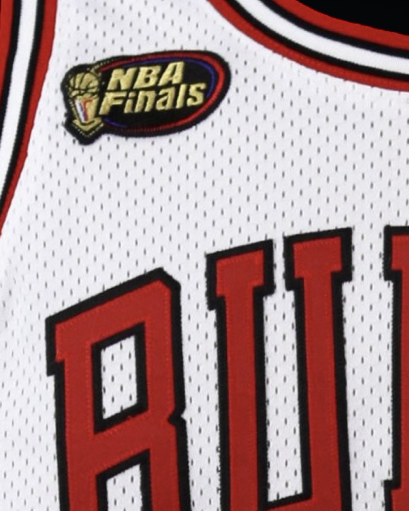
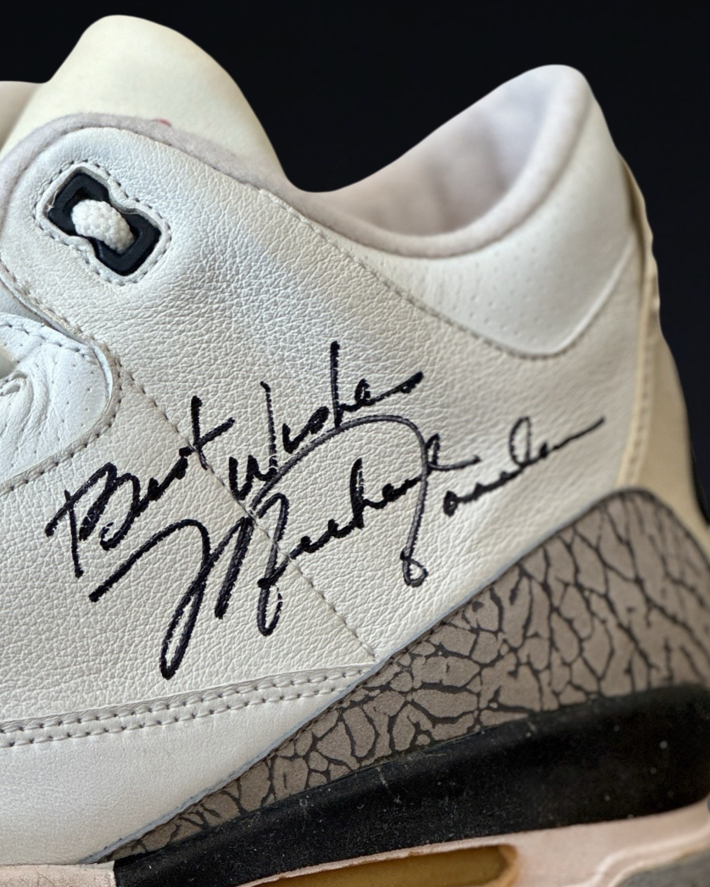
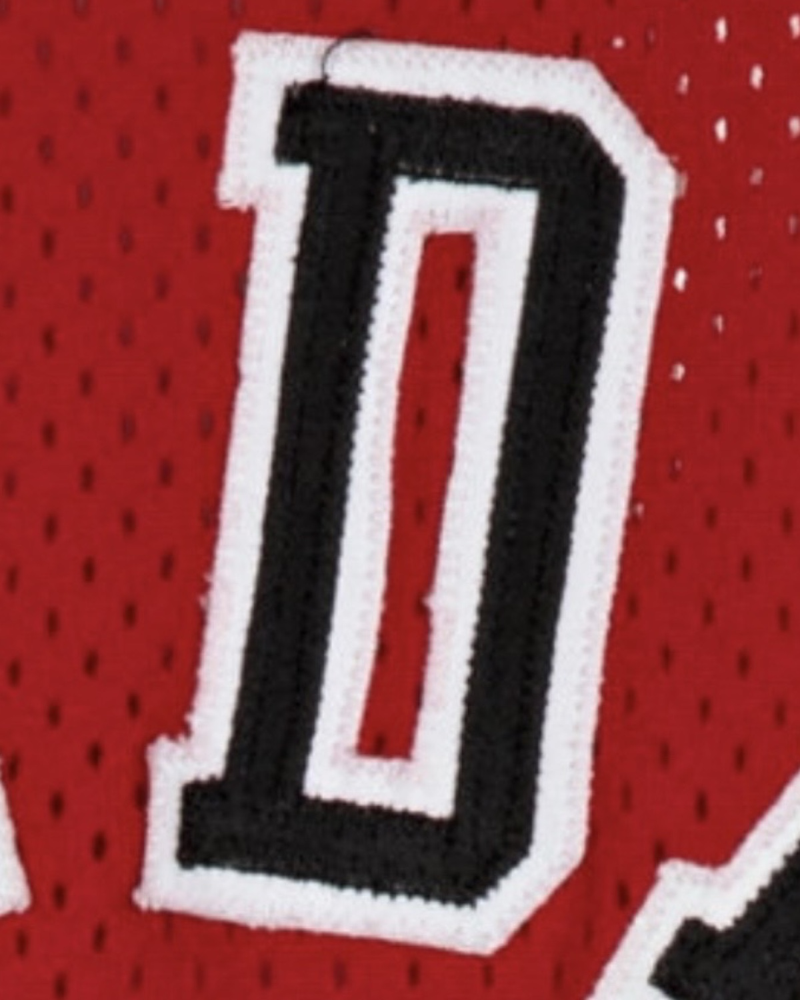
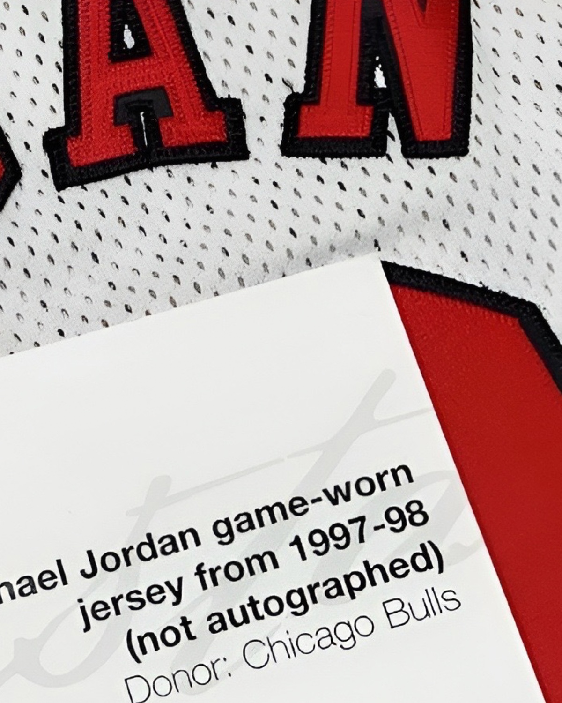
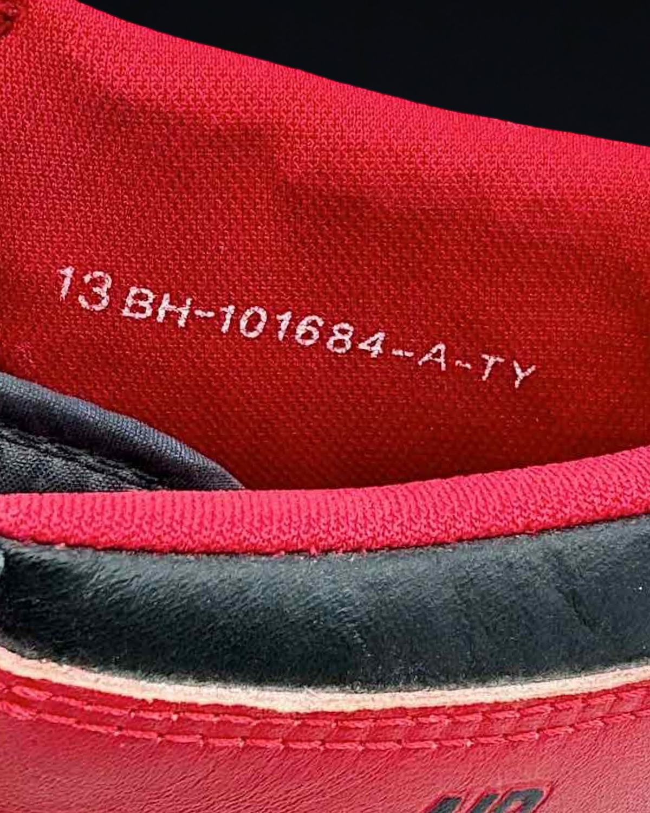
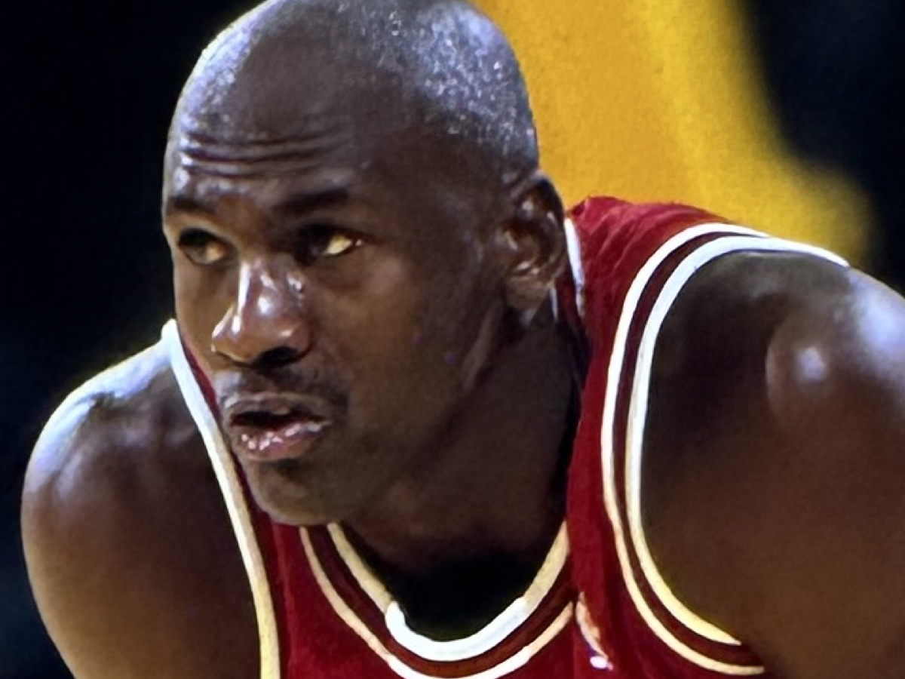
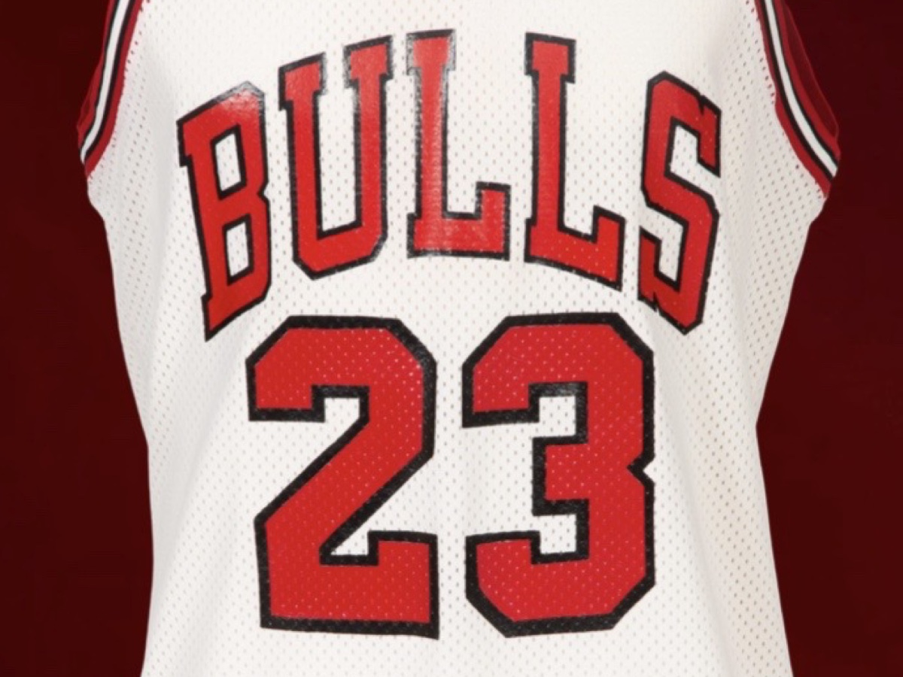

01
Image Dating
Editorial photography, game photography, video footage, studio sessions, and print appearances are separated and dated before any match conclusion is made.


A research-driven archive documenting the game-worn career of Michael Jordan through photographic evidence, continuity analysis, season attribution, and historical population study.
The Michael Jordan Archive is an independent research and documentation platform dedicated exclusively to the game-worn artifacts of Michael Jordan.
Rather than presenting artifacts as isolated objects, the archive studies garments and sneakers through photographic comparison, continuity analysis, and historical context to establish verified use across time.
Core sections of the archive, structured for navigation across jerseys, sneakers, research and writing.





The strongest objects in the archive are not simply identified — they are documented through a structured process combining imagery, continuity, tagging, chronology, and verified use across time.
Editorial photography, game photography, video footage, studio sessions, and print appearances are separated and dated before any match conclusion is made.
Fraying, puckering, repairs, loose threads, vinyl variation, and repeat structural traits are tracked across multiple dates and opponents.
Garments are placed within production cycles and use windows through tagging, style changes, roster context, and related source material.
Confirmed examples are then studied against the broader survival record to understand scarcity, circulation, and historical significance.
Case analysis, archival writing, and research findings drawn from ongoing documentation within the archive.

A study of museum-held Michael Jordan game-worn jerseys and the role of photographic identification in revealing their true place within the historical record.

A documented example showing how archival negatives and video expand prior match work.

A research finding built from cross-game comparison, wear continuity, and contextual dating.